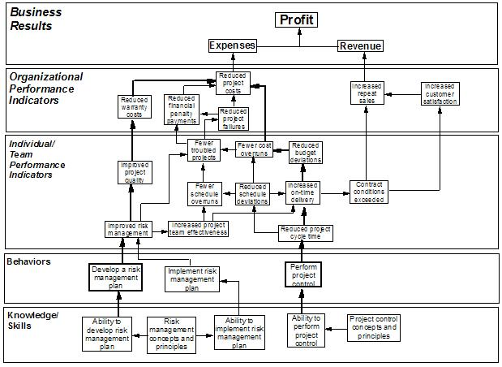

| Example: Causal Chain for a contract manufacturing firm |
 |
|
| Related Elements |
|---|
The XYZ Company is contract manufacturing firm located near Lexington, Kentucky. Most of its business is in small and medium-sized product assembly projects. The company was experiencing a significant increase in expenses due to poorly managed projects and reduced repeat sales revenue because of customer dissatisfaction. The company wanted to turn this situation around. The XYZ Company believed that the problem was substantially due to poor project management. The company was ready to hire a training company to come in and teach end-to-end project management skills to all project managers. An IBM Sales Specialist suggested that the company participate in an initial Organization Performance Improvement (OPI) consulting engagement to identify both learning and non-learning performance factors. This engagement identified the skills and knowledge that were required for the company to be successful, as well as some non-learning performance factors, such as disincentives to manage projects efficiently. The IBM consultants used a Causal Chain to determine the highest priority skills and knowledge that linked most closely to their desired business results. The Causal Chain was able to pinpoint the highest leverage behaviors that would drive the greatest results and deliver a high ROI to the XYZ Company for its investment in training.
A group of XYZ executives, managers, and project managers worked together to create the Causal Chain. The executives
identified their desired business result as increased profit. The team then identified the components of profit as
expenses and revenue. They then identified factors in the organization that impacted expenses and revenue, and then
linked these to individual and team performance. These performance indicators were then linked to specific behavior and
training. XYZ Company could then see very directly how providing training on key knowledge and skills in risk
management and project control can impact their bottom line.
 |
| © Copyright IBM Corp. 1987, 2012 All Rights Reserved Property of IBM These materials are intended only for use as part of an IBM engagement |